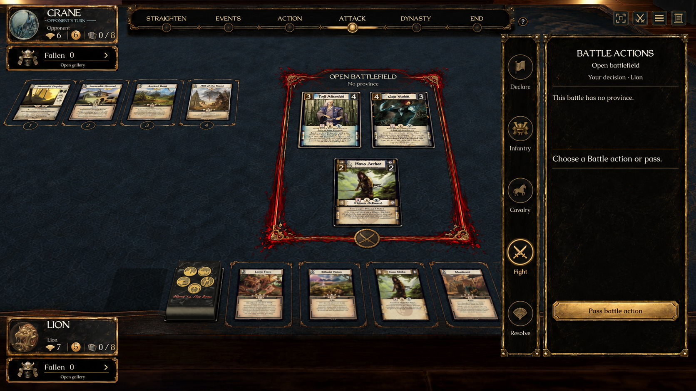
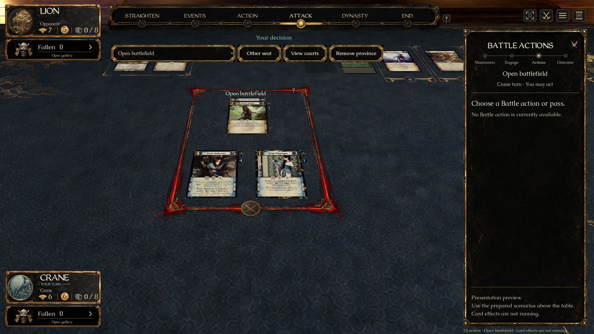
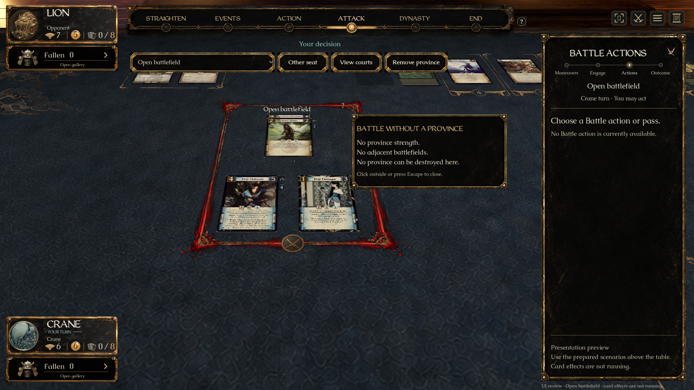
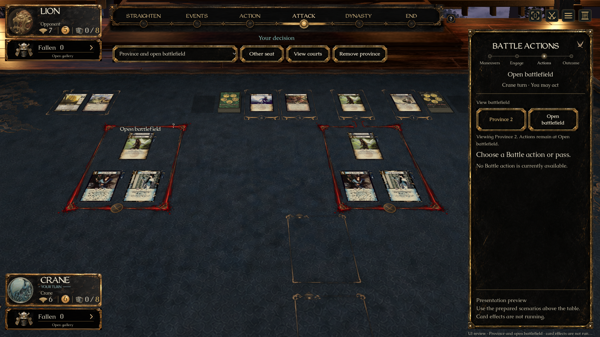
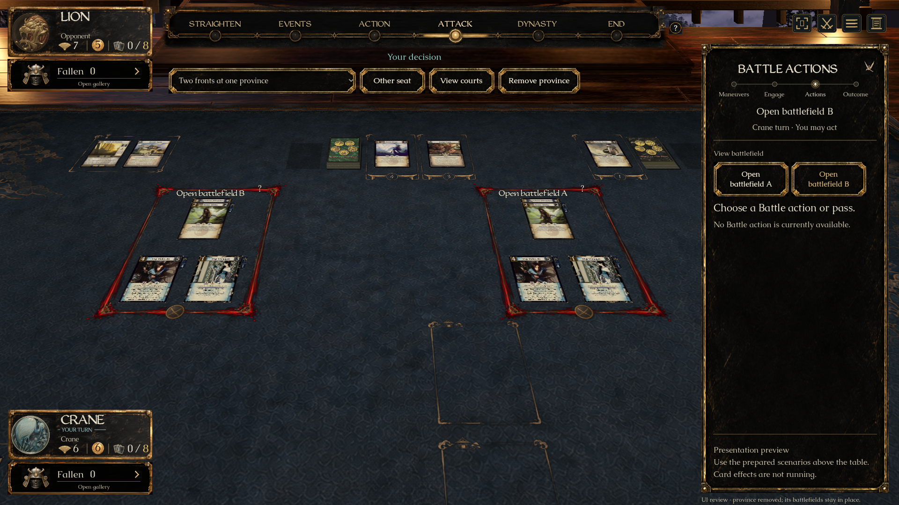
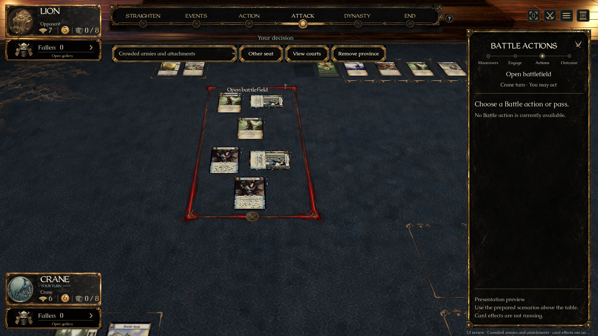
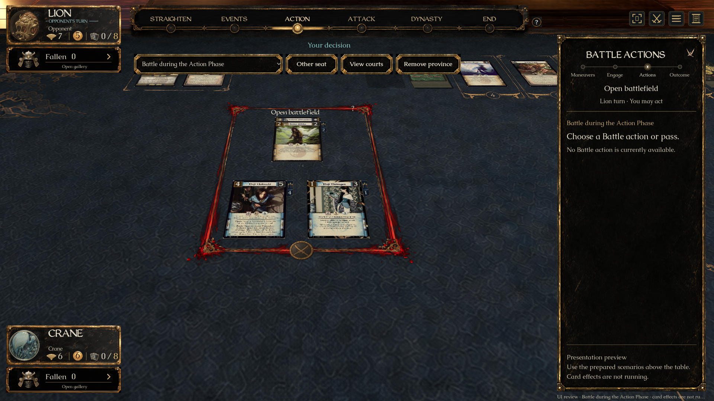

A's standalone court, B's on-demand help and C's camera navigation. Native images come from Godot, with full card scans. The prepared scenes are presentation fixtures; they do not execute card effects. Nothing is merged.


The source concept includes the vertical stage rail from the separate pending PR #564. This branch preserves main's horizontal stage strip. Camera framing, live cards and army arrangements also differ; this is approved artwork reuse, not a full-screen pixel match.





Checks: native card clicks, help/Escape, view-only navigation, both seats, six courts, associated additional front, destroyed province, stable names/positions, empty selection, caption clearance, 1440×900/ultrawide, motion preferences. Engine R1 tests: 17/17, including public turn context and surviving defenders at a resolved extra front. Windows packaging evidence is recorded on PR #565.